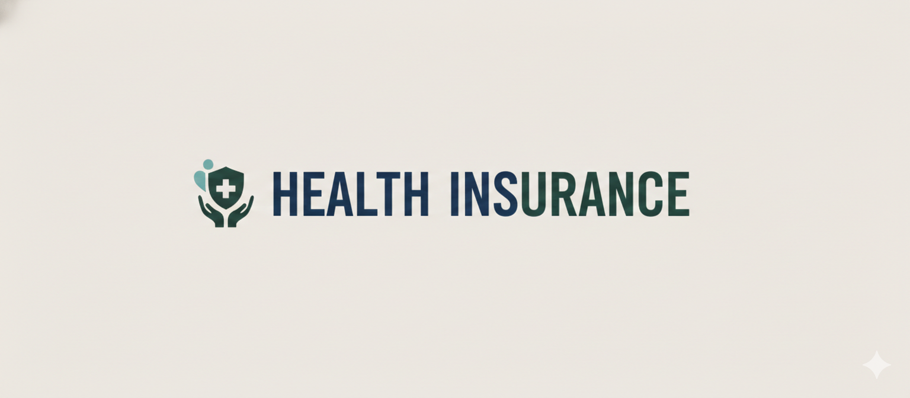
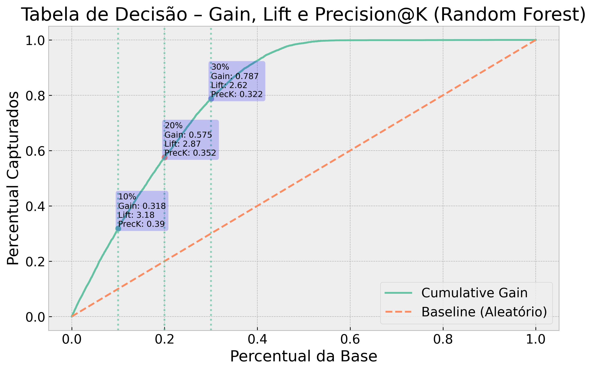
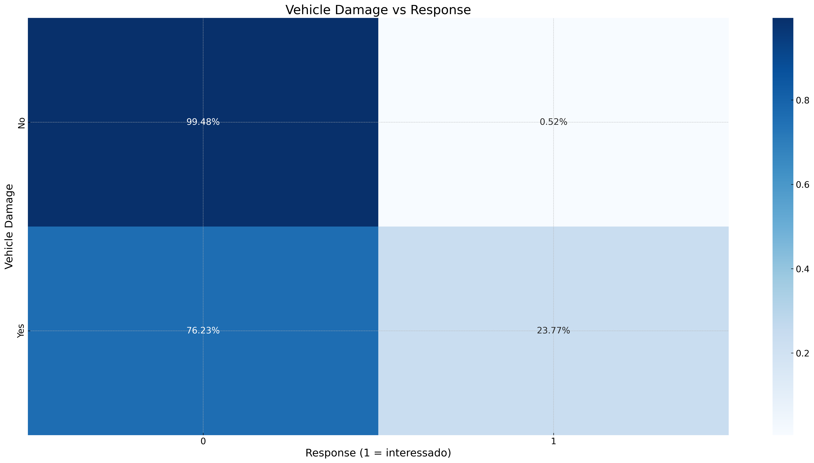
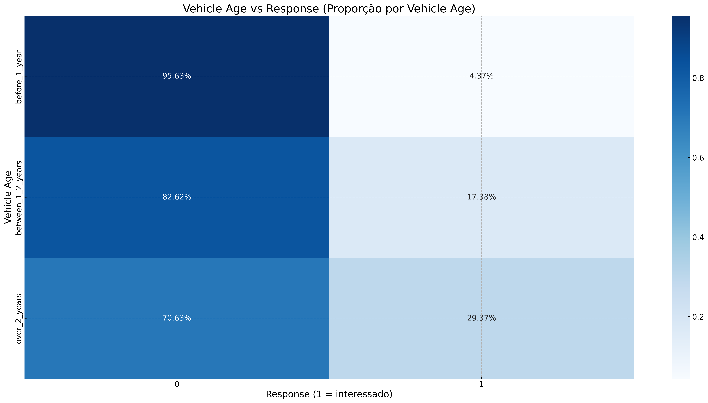
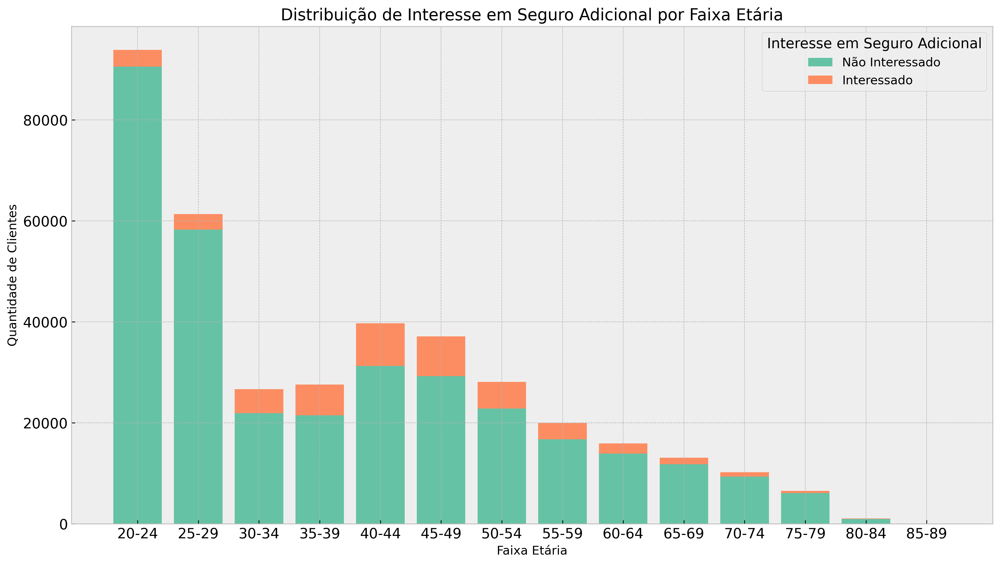
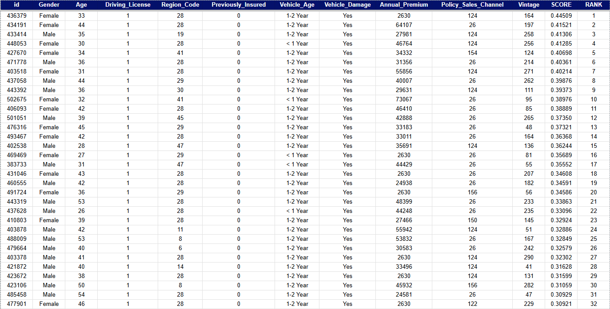

Health Insurance Cross-Sell Ranking


Curvas de Gain e Lift demonstrando o poder de ranqueamento do modelo.
01. Visão Geral
Uma seguradora de saúde precisava identificar quais clientes tinham maior probabilidade de contratar um seguro veicular. Com recursos comerciais limitados, a solução foi um modelo de Learning to Rank capaz de priorizar os leads com maior propensão de conversão, aumentando a eficiência das campanhas de vendas.
02. Insights de Negócio
Clientes que já sofreram danos em veículos demonstram maior propensão à contratação, indicando maior percepção de risco após experiências negativas.

Experiências anteriores com danos elevam a percepção de risco.
Proprietários de veículos com mais de 2 anos apresentaram maior interesse no produto, possivelmente pelo aumento dos custos de manutenção e risco mecânico.

Clientes com veículos acima de 2 anos demonstram maior interesse.
A maior concentração de clientes interessados ocorreu entre 40 e 49 anos, sugerindo um perfil financeiramente mais estável e com maior aversão ao risco.

Faixa etária de 40–49 anos concentra maior interesse no produto.
03. Abordagem Técnica
O modelo foi avaliado com métricas de ranking (Gain@K e Lift@K) em vez de acurácia, refletindo o objetivo real: não classificar certo/errado, mas ordenar por propensão de compra.
- Feature Engineering com variáveis demográficas e comportamentais
- Comparativo entre Random Forest, XGBoost e Regressão Logística
- Validação cruzada e ajuste de hiperparâmetros
- Análise de uplift financeiro por decil
da base
nos top 20%
nos top 30%

Integração via API Flask: time comercial consulta propensão direto no Google Sheets.
04. Deploy
O modelo foi disponibilizado via API Flask integrada ao Google Sheets, permitindo que o time comercial consultasse a propensão de novos clientes diretamente na planilha utilizada no fluxo operacional diário.
Ver no GitHub ↗Leia mais projetos


👋 Entre em contato